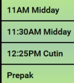
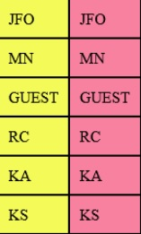

WebMOS is a custom full stack solution designed to replace paper scripts with a browser-based solution at five ABC Owned & Operated Television Stations. This solution streamlines the production process by completely removing the infrastructure and inefficiencies surrounding single use paper scripts.
WebMOS utilizes the NodeJS platform receives streaming XML content from a Newsroom CMS (Dalet or ENPS) using the MOS protocol schema. The WebMOS server maintains all MOS active rundowns and pushes real-time websocket updates to browser-based clients. As a browser-based solution, it’s easy to create bespoke frontend applications for a variety of purposes such as:
At Launch the user selects a show
Scripts are automatically colorized based on the read column initials. No additional data entry required, other than the talent must have consistent initials throughout the rundown.
The talent chooses their initials from the yellow list, and co-talent from the pink list.
Scripts are colorized based on the initials in the read column.